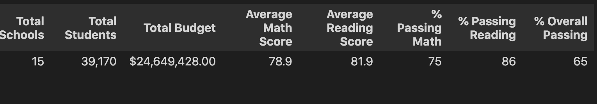
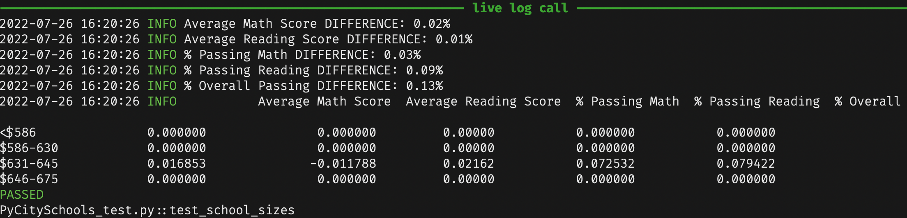

Challenge
Table of Contents
School District Analysis
Overview
Previously, we did an analysis of the student performance and funding of various schools. The results were very informative as we got to see the average scores by grade, school type, school size, etc. However, we need to repeat the process as we were informed that some of the data is invalid as some grades seem to be altered.
Tools and Requirements
Python 3.7.13
numpy==1.21.6 pandas==1.3.5 pytest==7.1.2
Results
The District Summary was not heavily affected by the missing data. We replaced all of the scores of the 9th grade of Thomas High School with NaN values. Even after that, the averages and percentages by school types, sizes and spending changed by 1% or less.

In our previous analysis, the Average Math Score was 79. The rest of the values, once formatted, stay the same. However, the School Summary was affected in two crucial ways. In order to find the effects of the missing data, we can design a few tests to compare them exhaustively.
# from PyCitySchools_test.py def compare_dataframes(original: pd.DataFrame, modified: pd.DataFrame): """Substract modified DF from original. Check that the values in the difference are smaller than 1%.""" assert original.size == modified.size difference = original - modified for col_diff, col in zip(difference, original): for val_diff, val in zip(difference[col_diff], original[col]): ratio = abs(val_diff / val) assert ratio < 0.01 if ratio != 0: msg = f"{col_diff} DIFFERENCE: {100*ratio:.2f}%" log.info(msg) log.info(difference)
Thomas High School Difference
A positive value means the that original result had a higher score.
| AverageMathScore | AverageReadingScore | %PassingMath | %PassingReading | %OverallPassing | |
| Thomas High School | 0.067412 | -0.047152 | 0.086481 | 0.290129 | 0.317689 |
We can suspect that the original Thomas High School 9th grade scores were curved to help more students pass the assignatures. The difference is very small, however, when comparing the rankings of each school by all columns, we find two problems.
Thomas High School rank moved from 4 to 6 in Average Math Score. Thomas High School rank moved from 1 to 3 in % Passing Reading.
This is the code we can use to find the ranking differences.
# from PyCitySchools_test.py def test_ths_ranks(complete_parameters: dict, modified_parameters: dict): """Find if Thomas High School rank amongst other schools changed.""" original_df = pd.DataFrame(complete_parameters) modified_df = pd.DataFrame(modified_parameters) size = complete_parameters["Average Math Score"].size rank_difference = pd.DataFrame() for category in complete_parameters: original = original_df.sort_values(by=category, ascending=False) modified = modified_df.sort_values(by=category, ascending=False) original["rank"] = range(1, size + 1) modified["rank"] = range(1, size + 1) original_rank = original.loc[original.index == "Thomas High School", "rank"] modified_rank = modified.loc[modified.index == "Thomas High School", "rank"] rank_shift = original_rank - modified_rank if rank_shift.values[0] != 0: log.info( f"""Thomas High School rank moved from {original_rank.values[0]} to {modified_rank.values[0]} in {category}.""" ) rank_difference[category] = rank_shift rank_difference.index.name = "" log.info(rank_difference)
A negative value means that the original result had the school ranked higher.
| AverageMathScore | AverageReadingScore | %PassingMath | %PassingReading | %OverallPassing | |
|---|---|---|---|---|---|
| Thomas High School | -2 | 0 | 0 | -2 | 0 |
This tells us that, in the original data, Thomas High School was #1 in %PassingReading and Top 5 in AverageMathScore. This is the single most important change in the results of the analysis, as school rankings can influence funding, student enrollment and many other benefits.
Ranking of Original % Passing Reading
| % Passing Reading | rank | |
|---|---|---|
| Thomas High School | 97.308869 | 1 |
| Griffin High School | 97.138965 | 2 |
| Cabrera High School | 97.039828 | 3 |
| Wright High School | 96.611111 | 4 |
| Wilson High School | 96.539641 | 5 |
Ranking of Modified % Passing Reading
| % Passing Reading | rank | |
|---|---|---|
| Griffin High School | 97.138965 | 1 |
| Cabrera High School | 97.039828 | 2 |
| Thomas High School | 97.018739 | 3 |
| Wright High School | 96.611111 | 4 |
| Wilson High School | 96.539641 | 5 |
Here is how the testing looks like.

Now that we have the code to find the differences on the results, we can explore the rest of the School Analysis parts for sake of completition. Positive values mean that the original results were higher.
Difference of Scores by School Spending
| SchoolSpending | AverageMathScore | AverageReadingScore | %PassingMath | %PassingReading | %OverallPassing |
|---|---|---|---|---|---|
| <$586 | 0.000000 | 0.000000 | 0.00000 | 0.000000 | 0.000000 |
| $586-630 | 0.000000 | 0.000000 | 0.00000 | 0.000000 | 0.000000 |
| $631-645 | 0.016853 | -0.011788 | 0.02162 | 0.072532 | 0.079422 |
| $646-675 | 0.000000 | 0.000000 | 0.00000 | 0.000000 | 0.000000 |
Difference of Scores by School Size
| SchoolSize | AverageMathScore | AverageReadingScore | %PassingMath | %PassingReading | %OverallPassing |
|---|---|---|---|---|---|
| Small (<1000) | 0.000000 | 0.00000 | 0.000000 | 0.000000 | 0.000000 |
| Medium (1000-1999) | 0.013482 | -0.00943 | 0.017296 | 0.058026 | 0.063538 |
| Large (2000-5000) | 0.000000 | 0.00000 | 0.000000 | 0.000000 | 0.000000 |
Difference of Scores by School Type
| SchoolType | AverageMathScore | AverageReadingScore | %PassingMath | %PassingReading | %OverallPassing |
|---|---|---|---|---|---|
| Charter | 0.008426 | -0.005894 | 0.01081 | 0.036266 | 0.039711 |
| District | 0.000000 | 0.000000 | 0.00000 | 0.000000 | 0.000000 |
Difference of Math and Reading scores by grade
Because we replaced the scores of the 9th grade with NaN values, we can’t really compare the 9th grade row in the same way as we can compare the rest of the analysis results. If we try to use Python to make a judgement, we will probably run into an error as we could not compare NaN to a float like with other tests.
assert abs(value_modified / value_original) < 0.01
> assert abs(value_modified / value_original) < 0.01 E assert nan < 0.01 PyCitySchools_test.py:159: AssertionError
Summary
- The biggest difference was that Thomas High School was Ranked
#1in Passing Reading Percentage before removing the data, and moved to#3once we replaced the scores withNaN. Because we removed the values and didn’t replace them with new ones, we are seeing the data without the 9th grade scores, but we can presume that, if we were to have the hypothetical “correct data”, it would be closer to the average of the rest of the grades, specially to the schools in the same bins. - Another important change was that Thomas High School was
Top 5in Average Math Score before removing the data, and moved to#6once we replaced the scores withNaN. What is most interesting is that the Overall Percentage didn’t change that much, as we saw increases in both reading and math scores. We can assume that the curve applied to the reading scores helped mostly the students that didn’t pass the assignature initially. - The whole District Average Math Score decreased by
1%after removing the data, some of it can be the formatting of the data to string as the rest of the values that we inspected more closely had changes under 1%, which in this case was an arbitrary parameter for testing that the differences wouldn’t be too big. - The School Summary was not heavily affected as the schools are shown individually, however, Thomas High School affects the Binned results because it is grouped with the rest of the
Charter,Medium Sizedand$631-645groups. All of the differences are important but theSpendingtable may be the most relevant in case of requesting funding or when doing financial analysis.
Closing Thoughts
Thanks to Python and Pandas we were able to process the data once more in a streamlined way. We can also run as many transformations, comparisons and tests with our DataFrames as we want in order to explore the limits of our data. The possibility of doing so programmatically allows us to spend more time doing many iterations of how we group and visualize the data and can lead us to revealing results. In this case, being able to compare the schools in different groups and rankings uncovered the effects of the altered data in our original assessment.